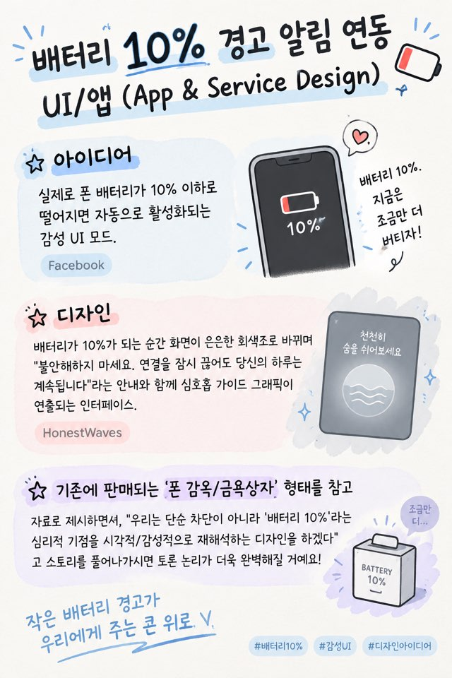

10%
A LITTLE PAUSE
배터리는 충전하면 되지만,
당신의 시간은 충전할 수 없으니까.
1조은성 · 수연 · 강철 · 태양 · 하정
→ · Space 다음 ← 이전 F 전체화면
01어떤 아이디어가 나왔나요
숫자 10이 들어간 말이라면 무엇이든. 다섯 명이 꺼내 놓은 열두 가지 생각이에요.
02채택된 표현 주제
배터리 10%
- 수업에서 시작
다른 강의보다 휴대폰을 많이 쓰는 수업이었어요.
- 떠오른 문제
그래서 떠오른 건 현대인의 스마트폰 의존 문제.
- 숫자 10과의 연결
숫자 10을, 누구나 매일 마주치는 배터리 10%로 연결했어요.
03표현 주제의 발전 모습
초기안변형안수정안변화의 이유
- 아이디어
폰 배터리가 10% 이하로 떨어지면 자동으로 켜지는 감성 UI 모드
- 디자인
화면이 은은한 회색조로 바뀌고, 안심시키는 안내와 함께 심호흡 가이드가 나와요.
- 참고
‘폰 감옥·금욕상자’처럼 막는 대신, 배터리 10%라는 심리적 기점을 감성적으로 다시 해석했어요.

03표현 주제의 발전 모습
초기안변형안수정안변화의 이유
- 이름
10% · A LITTLE PAUSE
잠시 멈추는 것의 가치를 아는 서비스
- 색
빨간 경고 대신, 차분한 네 가지 색
하늘 · 라벤더 · 세이지 · 샌드 - 한 줄
10% for a better you
더 나은 나를 위한 10%
03표현 주제의 발전 모습
초기안변형안수정안변화의 이유
경고 대신 쉼을 권하는 흐름을, 앱 안에서 실제로 동작하는 일곱 개 화면으로 옮겼어요.
03표현 주제의 발전 모습
초기안변형안수정안변화의 이유
처음엔 아이디어를 설명하는 그림이었지만,
점점 실제 앱 디자인으로 바꾸고, 앱 안의 동작하는 UI까지 보이도록 고쳤어요.
04정리된
시각화 결과물
- 01배터리 10% 알림 화면
- 02호흡 가이드
- 03오프라인 미션
- 04선택 화면
- 05사용 기록
- 06설정
- 07마무리 화면
04전달하려는 의미
- 핵심 문제
스마트폰에 기대는 사이, 내 상태와 현실의 일상을 놓치는 것
- 앱의 역할
배터리 10%를 계기로 무의식적인 사용을 알아차리고, 잠시 멈추도록 돕는 것
- 최종 목표
스마트폰 사용을 스스로 조절하는 습관, 그리고 나와 현실에 대한 관심을 되찾는 것
배터리는 충전하면 되지만,
당신의 시간은 충전할 수 없으니까.
천천히 숨을 들이쉬세요천천히 내쉬세요
05본 과정을 통해 느낀 점
- 은성
잘하는 분야도 생각도 서로 달라서, 의견을 나누고 조율하는 과정이 중요하다는 걸 배웠어요. 역할을 나누니 효율도 올라갔어요.
- 수연
함께 이야기하니 혼자일 때보다 다양한 아이디어가 나왔고, 배터리 10%를 스마트폰 의존 문제와 연결할 수 있었어요.
- 강철
과는 달라도 한 주제에 각자 다른 방식으로 다가가는 과정이 흥미로웠고, 함께 결과물을 내니 성취감을 느꼈어요.
- 태양
모두가 한 주제로 다양한 생각을 말하는 걸 보며, 혼자 정할 때보다 협업의 장점을 느꼈어요.
- 하정
숫자 10에서 배터리 10%, 현대인의 피로까지 이어 시각화와 상품화까지 해냈어요. 협업의 재미와 성취감을 느꼈어요.
05아쉬웠던 점, 다음엔 이렇게
아쉬웠던 점
- 의견을 하나로 모으는 데 시간이 오래 걸렸어요.
- 의견이 제각각이라 최종안을 고르기 어려웠어요.
- 내 의견이 채택되지 않아 조금 아쉬웠어요.
다음엔 이렇게
- 시작 전에 각자의 역할과 목표를 먼저 정하기
- 진행 상황을 실시간으로 꾸준히 공유하기
- 다른 사람의 의견을 적극적으로 듣고 받아들이기
10%
for a better you
지금, 잠시 쉬어가도 괜찮아.
감사합니다
1조